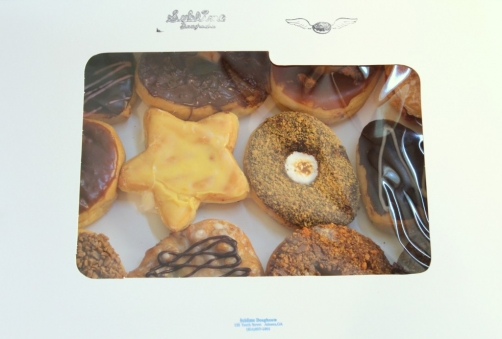
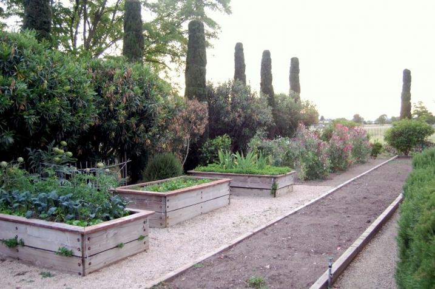

.png)
.PNG)
.PNG)
.PNG)
.PNG)
.PNG)
.JPG)
.JPG)
.PNG)
.PNG)



Happy Mother’s Day to all the moms out there! I hope you have had a delightful day. The one thing I think all moms should enjoy is great food. (Well, actually everyone should enjoy that – not just moms, but especially moms on this day.) Anyway, my crazy boys decided they wanted to get me the best doughnuts in the world for my Mother’s Day gift, so they drove an hour and 45 minutes to Sublime Doughnuts this morning and brought back this box of a dozen assorted delightful yummies:
Just in case you want to know the flavors, they are as follows from left to right, top row to bottom:
Raspberry, Nutella, Reeses, Strawberry Shortcake, Dulce de Leche, Orange dream star, S’mores, Boston Cream Pie (with an M for “mothers”), Toffee, Banana fritter, Butterfinger, and Nestle Crunch.
Good grief they were good! (And I am so full right now I can’t move….) We cut them apart and tried them all. I think my favorite was the orange followed closely by the strawberry shortcake. If you are near Atlanta, make the trip. They are delicious!
Okay, now turn your attention from doughtnuts to dinner…

We have always been big eaters around here, and dining out at good restaurants is one thing our family really enjoys doing together. (And we are also pretty good about debating who has the best food, and how steaks should be cooked! 🙂 ) When we made our trip to Napa several years ago, not only did we research accommodations, but we also researched restaurants. Obviously, Thomas Keller’s French Laundry showed up time and time again as the place to eat, but with three children along for this trip and a budget to consider, that was not a possibility for us. But that was no problem because Napa Valley has many amazing restaurants.

I know food is the ultimate consideration when choosing a place to eat. If it is not good, don’t even consider it. But in Napa, not only was the food good, but the restaurants also had fabulous gardens. Take for instance, the gardens above from the place we dined our first night there, Bistro Don Giovanni. Aren’t all those statues amazing?!

And not only were the statues and gardens gorgeous, but the floral arrangements inside the restaurant took my breath away!
As you can see, the restaurant interior is very nice, and they have a cozy outdoor terrace for additional dining space.
Our meal was quite tasty, and we enjoyed a delicious treat from their dessert menu afterwards… bistrodongiovanni.com
bistrodongiovanni.com
the Bostini Trifle bistrodongiovanni.com
bistrodongiovanni.com
Bistro Don Giovanni serves Italian fare in Napa. We had an assortment between us of Farfalle alla Cacciatore (a rabbit dish), ravioli, grilled pork chop, and seared salmon.
The following day we drove through the countryside and explored the small towns in the area. I especially loved St. Helena with its wineries and cute shops. We had lunch that day at this mostly seafood restaurant:

The interior was very pretty…

but since it was a warm sunny day, we enjoyed our meal out on their terrace. (I think terraces and patios are required at Napa restaurants. 🙂 )


I had wonderful fish tacos, and my husband had the blackened salmon sandwich.
Take a look at their roasted banana rum ice cream sandwich. Quite droolworthy, don’t you think? (It has homemade banana bread in it.)
Unfortunately, Go Fish is no longer open. It was changed into a Mediterranean style restaurant called Brassica.
And then last year, it changed once again. This time it became more “family friendly” with a children’s menu included. It is now known as Cindy Pawlcyn’s Wood Grill and Wine Bar. Here is a look at their adult menu.
They still have the patio for dining as Go Fish did. cindypawlcynsgrill.com
cindypawlcynsgrill.com
Another restaurant in St. Helena that I would like to try the next time we visit is French Blue. It too, has a beautiful small terrace area.
And a charming light filled interior space…although I am not real sure about eating with all those throw pillows there. What do you think of that?
In my next post I want to show you my very favorite restaurant in the Napa region, and I have a recipe from there to share. Please be sure to come back for that. I promise you don’t want to miss this one!
So how did you spend your Mother’s Day this year?
Did you dine at a wonderful restaurant? (or eat a box full of doughnuts? 🙂 )
We’d love to hear all about it in the comments!


.PNG)
Kelly,
My husband got up early and drove across town to a bakery and go us fresh donuts for our breakfast as well! I love their blueberry cake donuts! Then we meet my parents and his parents at the lake house and had a wonderful late lunch together. It was a beautiful and relaxing day!
Kelly,
I have so enjoyed seeing your post about your trip to Napa. We have wonderful friends who go there every fall. They are wine connoisseurs! In fact, we had some Napa wines last night at their house. I sent them the link to your blog and they loved it. They have never stayed in the cabins before and are very interest. Thank you so much for sharing.
These are my kind of restaurants!
I just found your blog & I am your newest follower.
Patty at http://homeandlifestyledesign.blogspot.com/
I started the morning with a lovely box of Morgan Price Candy from my hubs. Morgan Price is a locally owned candy store with many delicious treats. Then off to church…had a visit from our daughter and grands, then off to eat dinner at son Charles’ home. It was a grand day!! Your donuts look amazing…will have to check that out the next time I am in Hotlanta.
Hi Kelly, I have family in Napa and I visit when I can, of course. Can’t wait to hear what your favorite restaurant is. I live near Atlanta and will have to try Sublime Doughnuts. Enjoy your blog!
Kelly,
What sweet sons! I love donuts and those look delicious.
I have never eaten at any of the restaurants you’ve shared from Napa, I always loved the Go Fish sign. I’ve several friend’s that have eaten at French Laundry but I seriously doubt that I could justify their prices, even if we were wealthy, which we’re not. One of our sons loves to cook and has a couple of Thomas Keller’s cook books, that will be as close as I get to sampling his amazing talent. lol.
Karen
We started my early Mother’s Day outing at a street party Friday evening with vintage music, old cars and 1920’s costumes to celebrate the premier showing of The Great Gatsby! Fun, fun! Then a late night snack at Steak and Shake! My girls spent the night– then on Saturday we went out to an early lunch at a quaint Mom and Pop Mexican restaurant and had wonderful homemade food. Then we continued on a girl’s shopping trip and finished with our favorite coffees at Star Bucks. Wonderful time was had by my 2 daughters and my only granddaughter and myself!! I am a blessed mother!:) now after reading your post, I am craving my favorite creamed filled donuts!!:) thanks for sharing your Mother’s Day!!